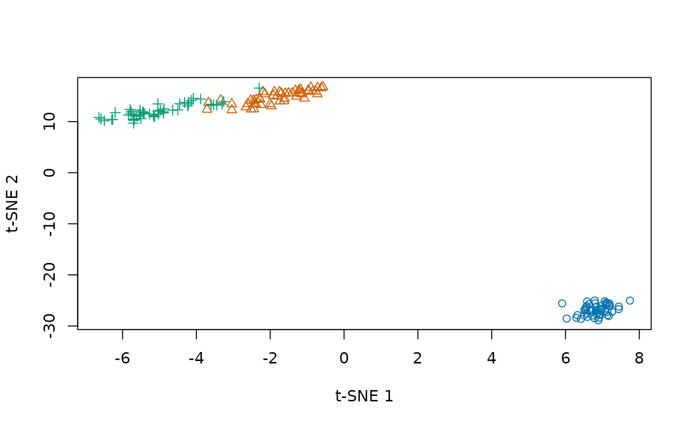

Most smallvis methods calculate interactions between every pair of observations. That makes them convenient for experimentation on small datasets, but their time and memory requirements grow quadratically. Barnes-Hut t-SNE approximates repulsive interactions, allowing larger datasets when combined with neighbor-based input affinities.
Run Barnes-Hut t-SNE
This configuration uses approximate nearest neighbors, a sparse neighbor graph, and two native workers. Iris is small enough to run as a quick example; the configuration becomes useful when the dense calculation is too expensive.
set.seed(42)
bh_fit <- smallvis(
iris,
method = "tsne",
bh = TRUE,
inp_kernel = "knn",
nn = "approximate",
n_threads = 2,
perplexity = 30,
theta = 1,
exaggeration_factor = 12,
stop_lying_iter = 250,
Y_init = "spca",
epoch_callback = FALSE,
verbose = FALSE
)
species <- as.integer(iris$Species)
plot(
bh_fit,
col = c("#0072B2", "#D55E00", "#009E73")[species],
pch = species,
xlab = "t-SNE 1",
ylab = "t-SNE 2"
)
Barnes-Hut is implemented for t-SNE with two output dimensions. The
theta parameter controls tree approximation: smaller values
open more cells and require more work; zero evaluates the repulsive sum
without tree approximation. Approximate neighbor search and the input
kernel remain separate choices, so setting theta = 0 does
not restore affinities omitted by a sparse input graph.
The example uses binary k-nearest-neighbor affinities. Use
inp_kernel = "nngaussian" for Gaussian perplexity
calibration over neighbors instead. The input kernel and Barnes-Hut
arguments describe these controls.
Accelerate a dense calculation
For dense t-SNE, use_cpp = TRUE enables native
calibration and gradient calculations. It retains the dense pairwise
representation, so this speeds up a calculation without removing its
quadratic memory requirement:
native_fit <- smallvis(
iris,
Y_init = "spca",
perplexity = 30,
use_cpp = TRUE,
n_threads = 2,
epoch_callback = FALSE,
verbose = FALSE
)
dim(native_fit)## [1] 150 2Native acceleration covers selected calculations and methods. The
specialized dense gradient kernels use two output dimensions; other
dimensions use the general R calculations for those steps.
use_cpp = TRUE therefore does not imply that every stage or
every method runs in C++.
Choose a thread count
n_threads = 0 selects serial execution. Positive values
control native worker threads in the supported stages, including
neighbor search. More workers can help larger inputs, but setup costs,
memory bandwidth, and work still performed in R limit the improvement.
Numerical libraries can also have their own thread settings.
Start with a modest worker count and measure the complete call on your data. Changing from dense affinities to a sparse neighbor graph also changes the input problem, so compare those embeddings as different approximations rather than interpreting the runtime alone.